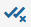
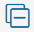

The Tracing tool helps analyze the execution of server scripts to identify the causes of delays and eliminate failures. This tool helps the system collect data about the order in which functions are called, the execution time of each activity, and errors occurred.
The data are saved in the form of traces. These are records where you can see the diagram of the user request and information about its each step.
All traces are saved in Administration > Developer Tools. In addition, you can view the information in the component for which the trace is recorded.
Data collection is available for the following server scripts:
- API methods in modules.
- Business process activities.
- Event handling.
- Business processes.
- Widgets.
To optimize the data collection process, you can choose for which system components to enable tracing. For example, you can collect data only for the scripts of the solution you are currently working on.
Traces are stored in the system for a limited period. You can export them, e.g., to pass error information to another IT specialist. You can also reload the traces to BRIX for further review.
How to use tracing
You can use tracing in the following cases:
- To find out the details of the error and customize its handling.
- To eliminate the reasons for slow execution of certain script sections and optimize the work of users.
- To evaluate the effectiveness of changes after the solution has been improved.
Let's see how to use tracing results on the example of optimizing scripts of a user business process:
- Enable tracing and add a business process to the list of traced components.
- Obtain data for analysis. To do this, you can use scripts that simulate user interaction with the process, or you can trace the actual work of employees.
- Analyze the trace data. Please pay attention to the steps that consistently take a long time to complete, as well as recurring errors. You can export the traces to return to analyze them later.
- Make improvements to the process scripts.
- Repeat steps 1-3 to check the speed of execution of the scripts and make sure the errors have been resolved.
- Once the optimization is complete, you can stop collecting data on the business process so that the traces do not take up disk space. To do this, exclude the process from the list of objects to track.
Enable and customize tracing
начало внимание
Only users included in the Administrators group can configure tracing.
конец внимание
To use tracing:
- Go to Administration > Developer Tools and in the Tools block, select Tracing.
- In the upper right corner of the page, click the gear icon.
- On the settings page, enable the tracing mode.
- Specify within which system objects you want to track the execution of server scripts: select solutions, modules, workspaces, as well as their separate objects: business processes, widgets, scripts, etc.
To do this, in the Save traces for objects field, click the drop-down menu and check the box next to the objects in the list. You can:
- Search by name.
- Perform following actions with nested objects:
- Select all objects.
-  Cancel selection.
-  Collapse the list of objects.
- Expand the list.
- Reset the list of selected objects.
- After specifying the objects to trace, click Apply.
- On the settings page, in the Retention policy and Error trace storage policy fields specify the time period after which records are deleted from the system:
- For BRIX SaaS the time limit is set to 15 minutes. You cannot change it.
- For BRIX On-Premises the default time limit is 10 days. This is the maximum value. You can decrease it.
- On the settings page, you can also see the amount of saved data and free up disk space by clicking Clear All Traces.
After enabling tracing, you will see:
- All saved traces on the Tracing page.
- Traces for a specific object:
- By business process instance. On its page, click the icon on the upper panel.
- By business process activity. Go to the Business Process Activities tab on the module page and open the activity.
- By event handler. Go to the module settings on the Event Handling tab.
- By API in the module. Go to the module settings on the API Methods tab.
- By widget. On the Developer Tools report, click Go to Trace.
начало примечание
Note
Formation of tracing results in the system is delayed from several tens of seconds to several minutes. The following may not be displayed at once:
- Traces on the executed script.
- Information on separate functions and actions in the page of a recorded trace.
The trace is recorded in the system and is displayed with a delay of about one minute after the script is executed.
конец примечание
Work with the Tracing page
In Administration > Developer Tools, on the Tracing page, you can view traces and export them to return to analyze the data later.
Search for traces
Use filters to find the records you need:
- Object types. Specify by which types of components to display records: API methods, business process activities, event handlers, business processes, widgets.
- Configuration objects. Select specific system components for which you want to display traces.
- Trace type. Select which records should be displayed on the page: all or only those with errors.
- Period. Specify the time period to which the records belong. The list will display all traces in which at least one step was performed during the selected period.
- Duration. Specify the duration of the tracked activity in minutes, seconds, and milliseconds, e.g., not less than 30s and not more than 1m.
To see records that match the specified conditions, click Search. Then click the name of the trace to view its data. See detailed information in the Trace content section.
Export traces
You can save traces to your PC to analyze a particular error later even if a record is deleted from the Tracing page or to give the data to another specialist.
You can export:
- A particular trace by opening its page and clicking the icon.
- Several traces in one archive. To do this:
- Open the Tracing page and select the check box next to the necessary records in the list.
- Click Download Traces.
- Save the generated .zip archive with the .json file of traces to your PC.
Import traces
Load the exported traces into BRIX to review them again. Please note, traces are imported for viewing only and are not saved in the system.
To download traces:
- On the Tracing page click the icon in the upper right corner.
- In the opened window, select the .zip or .json file with the traces.
This opens a list of records that looks similar to the Tracing page. To view the data of a trace, click its name.
Trace page
When you open a trace, you will see a diagram that shows the steps of the script execution. All actions and called functions are shown as colored segments with nesting preserved.
You can analyze the execution duration of each request and examine errors using the information on the page:
- Search string. You can search by all fields of the trace. For example, specify the name of a function to find out the duration of a request or enter the error text to find the step where the error occurred. Use the arrows next to the search bar to switch between results.
- Start and Duration. The date and time when the script started executing, and the duration of the execution in seconds.
- Trace diagram. Select the interval on the timeline so that only the activities included in it are displayed on the diagram. This will allow you to analyze a certain section of the script in detail.
- Operations. A tree of all performed activities. Click the step name to see detailed information: function attributes, events and errors occurred. The data will be displayed below the diagram and may look like this:
On the trace page, you can:
- Copy a link to a trace by clicking the icon next to its identifier. Any employee can open the record by the link, even if they are not a member of the Administrators group.
- Save the trace to your PC as an archive with .json file by clicking the icon next to the search box. The record can then be imported into BRIX for reviewing, even if it is deleted from the system.
Found a typo? Select it and press Ctrl+Enter to send us feedback